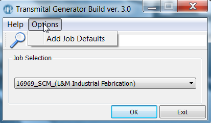
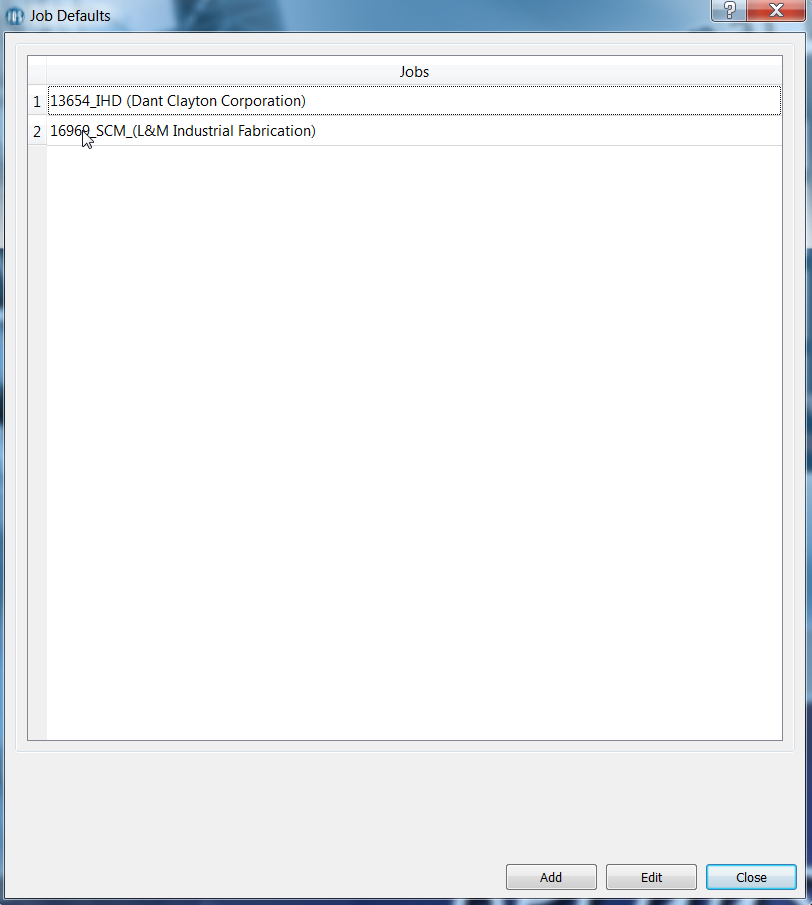
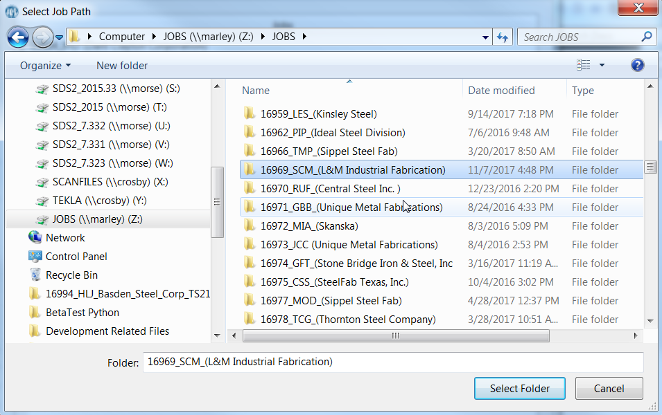
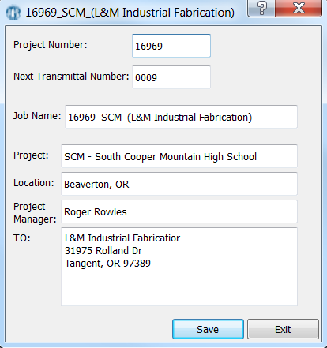
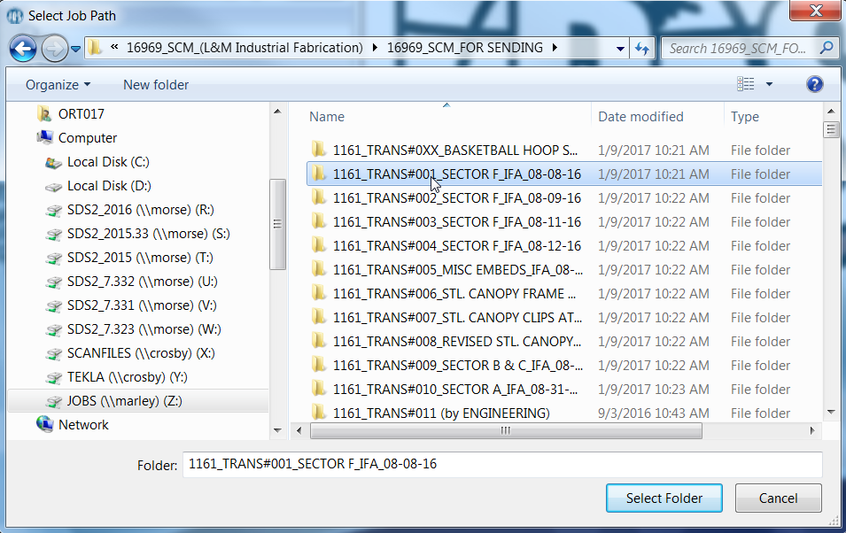
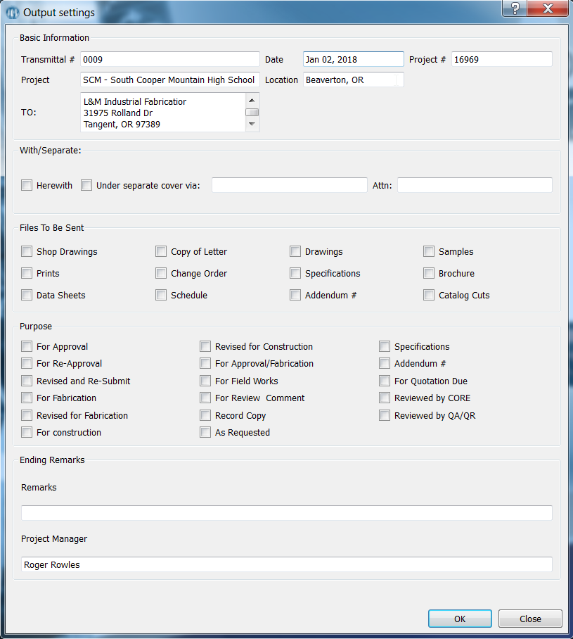
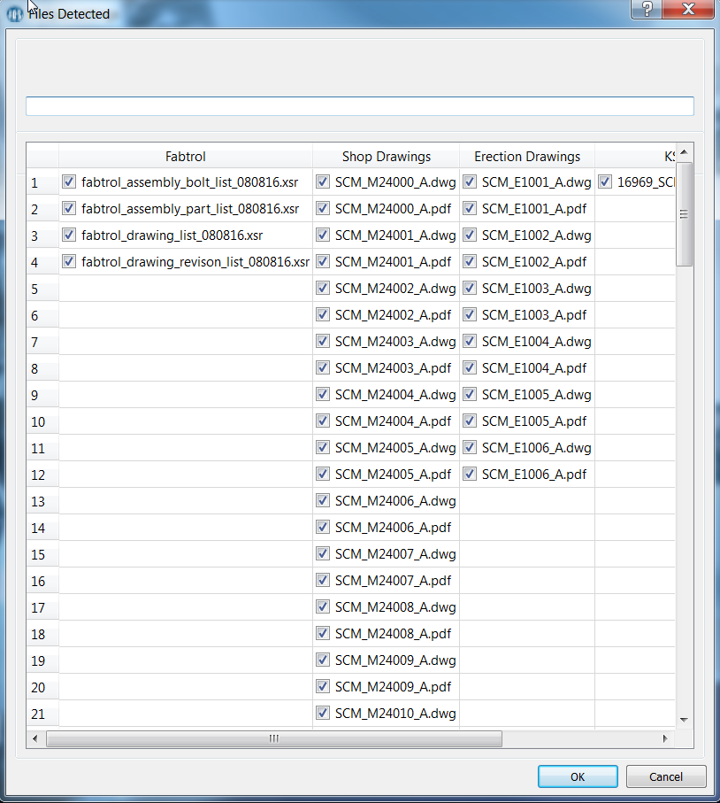

Setting Defaults
Before You you can select any job you munst first add a job and its defaults.
Upon opening of the application, select the 'Options' tab and select add 'Add Job Defaults'.

After the 'Job Defaults' appear, you are presented with two choices add and edit.

Upon adding a job, a directory window will appear, select the job you want and the
application will try to get as many available information as possible in that job

After selecting a job, the default window will appear where available information is saved
and can be edited. Other fields are already filled in this case.

Job Selection
Now that you have a job to select, you can now generate the transmittal.
Select the job you want and press 'Ok'
Transmittal Selection
After selection, a directory window will appear, you have to select the transmittal
you want to generate (ie. the main folder where the transmittal folders are located).

After selecting the folder the 'Output Settings' window will appear with all your
default settings. You can now finalize your generation.

There will be a summary window of all the files it detected, you can also include or
exclude files in the generation.

Standards
With all this convenient function comes at a price with standards.
All the files must be in the main transmittal folder (1161_TRANS#001_SECTOR F_IFA_08-08-16).
in 1161_TRANS#001_SECTOR F_IFA_08-08-16, the files must be in their respective folders where
the name of the folders must be their clear description because the name of the folder
will be the description of the files in the transmittal.
It should look like this:
- 1161_TRANS#001_SECTOR F_IFA_08-08-16
The location of the default repository of the generated transmittal will be in
the application's folder in 'Transmittal Generated'